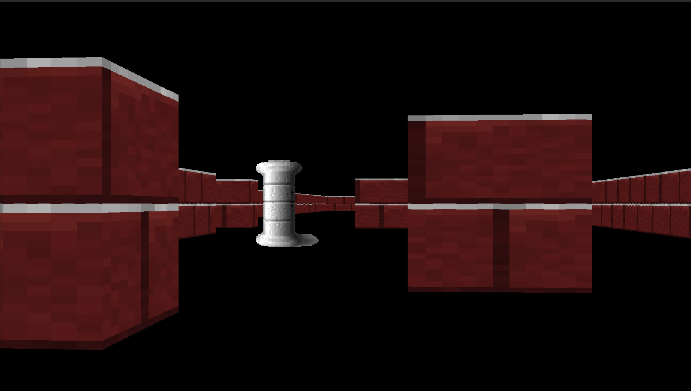
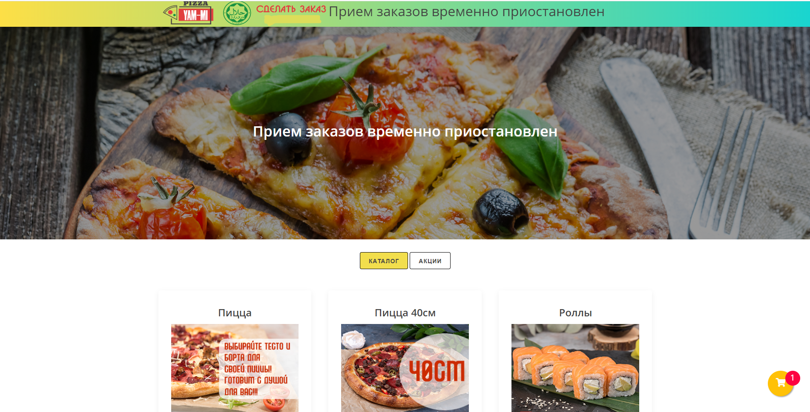
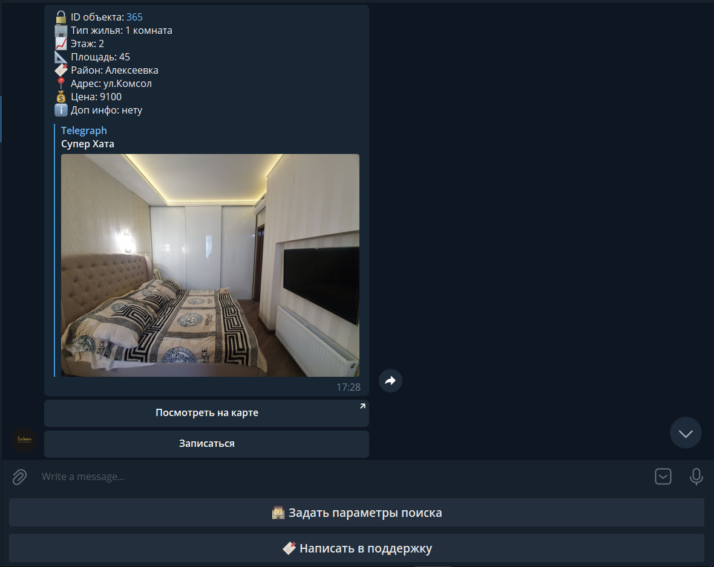
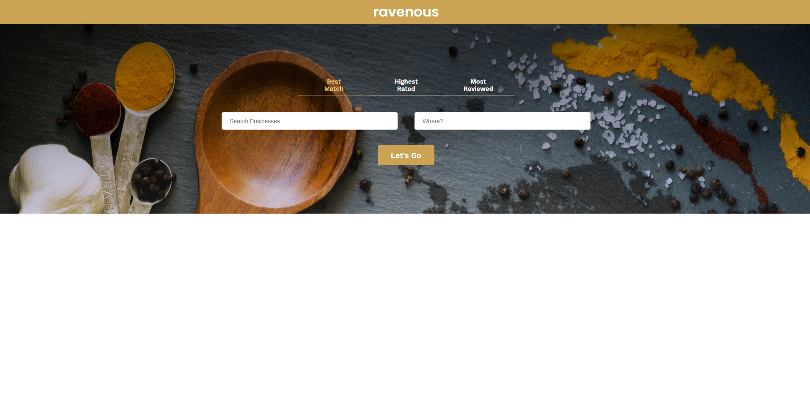
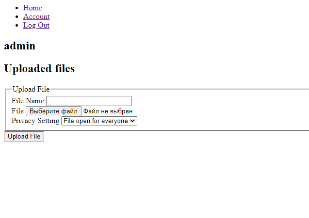

My Precious Treasure
Игра, созданная на Unity

Wolfenstein Engine
Реализация метода raycasting на языке C

Интернет Магазин Yami
Заказ, выполненый с помощью стека JS/Pug/SQLite

Телерам Бот для риелторской компании
Бот был создан с помощью Python и библиотеки aiogram

Ravenous
Проект, созданный на React, по поиску ресторанов с использованием API Yelp

ShareFile
Простой файловый обменник с незамысловатым видом, созданный на Flask